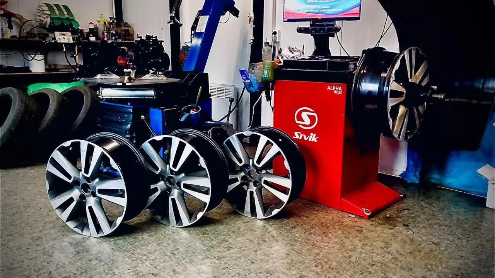
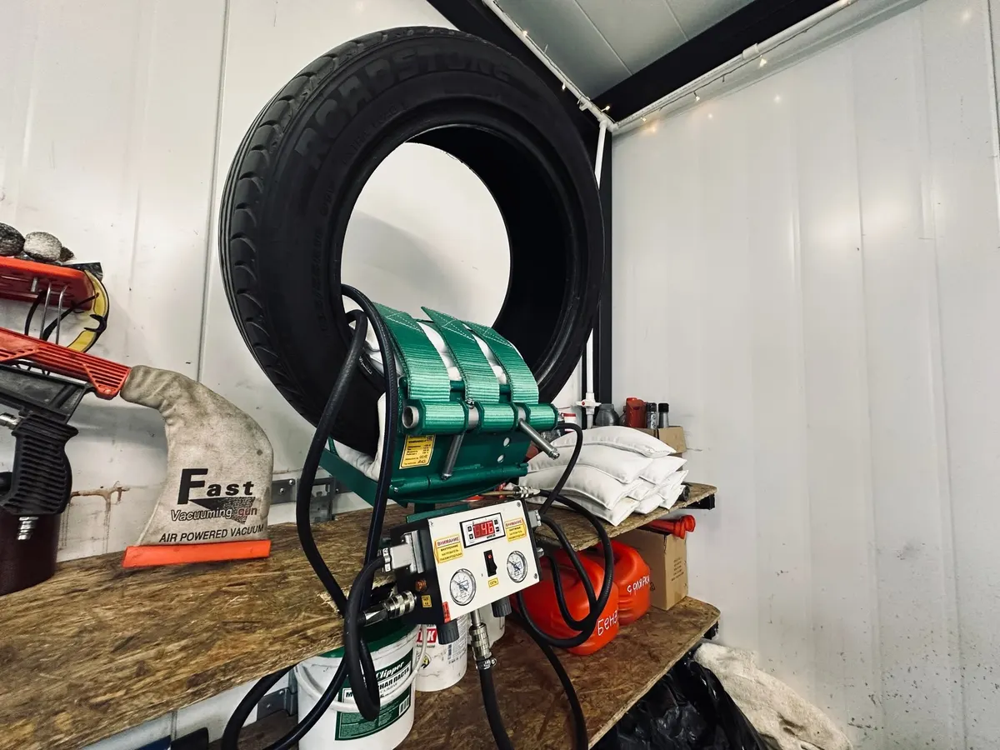
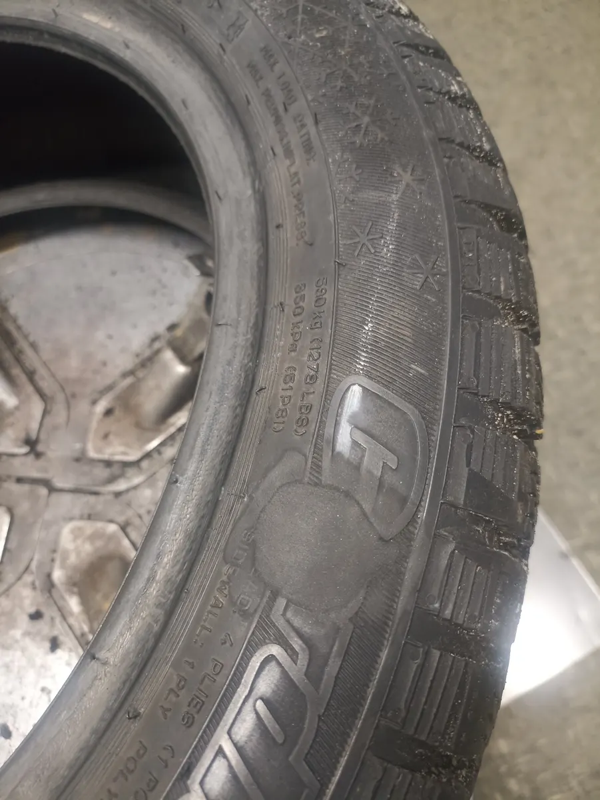

Шиномонтаж · Воронеж
Шиномонтаж и ремонт колёс в Воронеже
Ремонт порезов и грыж, правка дисков, балансировка, вулканизация. Цены на работы указаны, остальное: уточнить.
- Рейтинг 5,0 на Яндекс Картах, 82 оценки
- Ремонт боковых порезов и грыж
- Ежедневно с 09:00 до 22:00, предварительная запись

Чем занимаются
Входит
- Ремонт боковых порезов и грыж
- Правка погнутых дисков
- Балансировка
Отдельно, если нужно
- Вулканизация
- Предварительная запись
- Гарантия на работы
Цены на работы
Цена зависит от сложности работы. Где цены нет на карточке: уточнить.
Ремонт
- Ремонт боковых порезов и грыж1 300 ₽
Остальное
- Шиномонтаж (переобувка)уточнить
- Правка дисковуточнить
- Балансировкауточнить
- Вулканизацияуточнить
Данные взяты с карточки на Яндекс Картах.
Как это проходит
- 01
Пишете в мессенджер
Контакты на сайте.
- 02
Приезжаете
Ежедневно 09:00–22:00, ул. 9 Января, 104/1.
- 03
Делаем работу
Точная цена и сроки: уточнить.



Что говорят клиенты
Находят причину
«Тут точно найдут проблему и помогут» - из отзыва.
Объясняют просто и понятно
Так пишет клиент после ремонта колеса.
Цены адекватные
Так пишут клиенты в отзывах.
Отзывы с Яндекс.Карт
«Спасибо Артёму за работу. Выправил погнутые диски, заделал порез на покрышке, сделал балансировку всех колёс. Машина после этого едет отлично. Всё по цене нормально.»
Андрей А. · 9 сентября 2026
«Замечательный шиномонтаж, хочется выразить огромную благодарность мастеру Артему, очень грамотный специалист, быстро решил проблему»
Надежда Асеева · 28 сентября 2026
«Отличный шиномонтаж. Два дня подряд пробивал два разных колеса. Мастер все просто, понятно, доступно объяснил, оперативно устранил неисправности и дал дальнейшие рекомендации.»
Дмитрий Резников · 15 июня 2026
Отзывы с карточки на Яндекс.Картах, без правок.
Частые вопросы
Когда вы работаете?
Ежедневно 09:00–22:00.
Сколько стоит?
Ремонт боковых порезов и грыж: 1300 ₽. Остальное: уточнить.
Где вы находитесь?
Воронеж, ул. 9 Января, 104/1.
Напишите, пока колесо не подвело
- Адрес
- ул. 9 Января, 104/1, Воронеже
- Часы
- Ежедневно 09:00–22:00
- Телефон
- +7 (993) 728-33-78